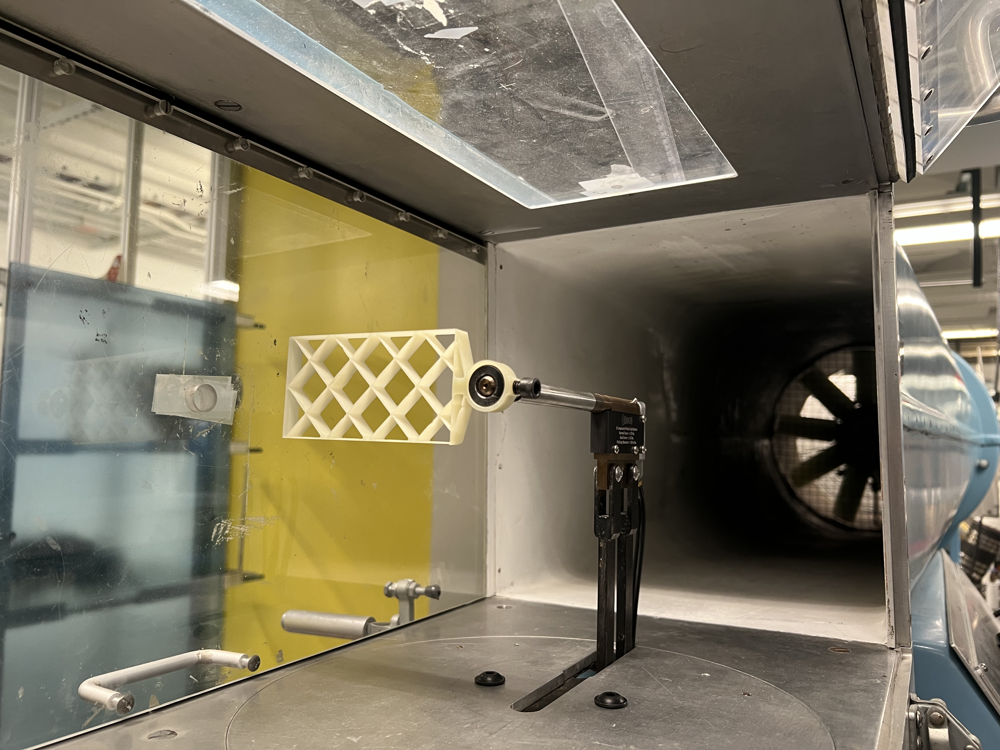

Custom Control Systems for Non-Traditional Flight Architectures
Our vehicle employs a three-gridfin control architecture, selected to exploit the high-drag control authority of gridfins during descent from balloon release conditions. Unlike traditional control surfaces, gridfins provide strong aerodynamic effectiveness across a wide range of flow regimes, particularly in the low-density stratosphere.
This unconventional configuration required the development of a custom control mixing algorithm. Standard flight control frameworks assume conventional control surface layouts and do not natively support tri-gridfin geometries.

Gridfin wind tunnel testing for aerodynamic characterization
To accelerate development, we built on the open-source ArduPilot ecosystem. While robust and widely validated, it does not support multi-fin mixing for this configuration out of the box.
We extended the codebase to implement custom actuator mixing logic, enabling stable control across all flight phases.
Custom multi-fin mixing implementation for tri-gridfin control architectures.
To evaluate performance and tune the control system, we developed PLAV (Python Laptop Air Vehicles), a 6 Degree-of-Freedom flight simulator designed for rapid iteration of custom airframes.
PLAV allows users to define their own aerodynamic models and simulate flight in a realistic Earth environment. Our implementation incorporates aerodynamic coefficients derived from both CFD analysis and wind tunnel testing.
This enabled high-fidelity software-in-the-loop validation prior to real-world flight testing.
6-DoF simulation environment with integrated BRGR flight model for software-in-the-loop testing.